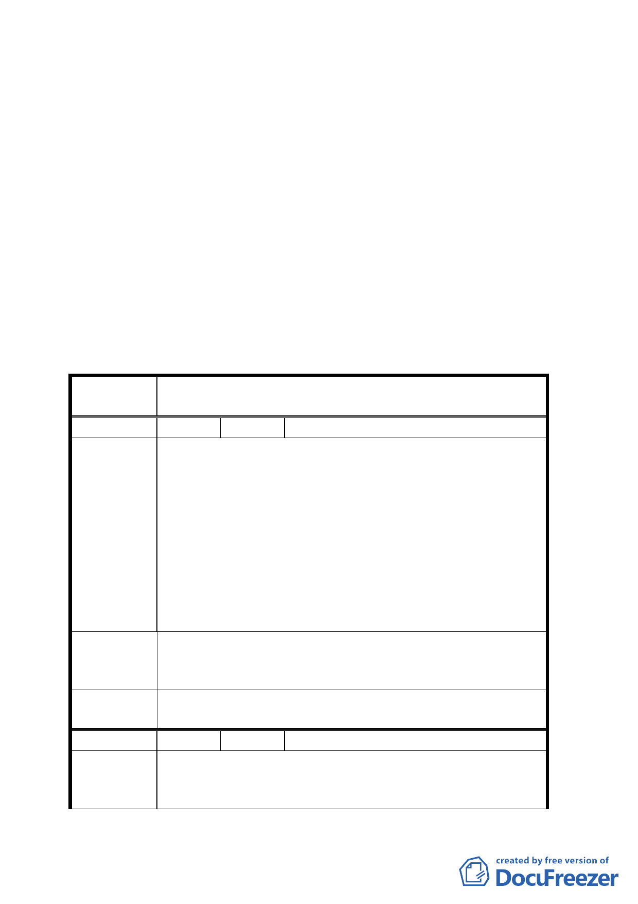

計準則，以與廣場相互呼應。
九、嗣都市更新處九十三年十一月十六日補充資料到會，爰提
會討論。
決議：
一、 本案除剔除臨西寧南路及貴陽街側國有地範圍內私有建
物部份修正範圍外，其餘依市府提案通過變更為廣場用
地。
二、 另由本會正式行文國有財產局澄清上述剔除範圍內之住
戶在國有地非公用使用情況下，是否有承購國有土地之
權利，提下次會議報告。
臺北市都市計畫委員會公民或團體陳情意見綜理表
案
名
變更臺北市萬華區中華路理教公所附近第四種商業
區為廣場用地計畫案
編 號 １ 陳情人 中華新村 119 戶（代表：陳慶松）
1、 馬市長的德政及政策是以達成台北市都市更
新為目的，這也是全台北市民的渴望，中華新
村的現住戶全多願意配合都市更新政策，極力
向國有財產局申請承購此十三筆土地（台北市
陳情理由
萬華區漢中段二小段 5、5-1、8、8-1、8-2、
132、133、134、135、136、137、137-1、137-2）。
2、 此十三筆國有土地已日據時代土地登記謄本
為證從清朝末年至今均是宗教聖地。都市更新
若是規劃為現代宗教商業大樓與 WTO 世界貿易
組織並行，必定可增加國庫及市政府之稅收。
請市府協助現住戶，依國有財產法第五十二條之二
建 議 辦 法 之規定，向國有財產局申請承購該十三筆土地，而
非將其變更為廣場用地。
委員會決
議
同決議一、二。
編 號 ２ 陳情人 國有財產局
1、 本案國有土地係以公開標售處理，前為配合
陳情理由
市府都市更新計畫，暫緩辦理標售事宜，茲考
量都市更新進展，為避免國有土地繼續閒置及
六